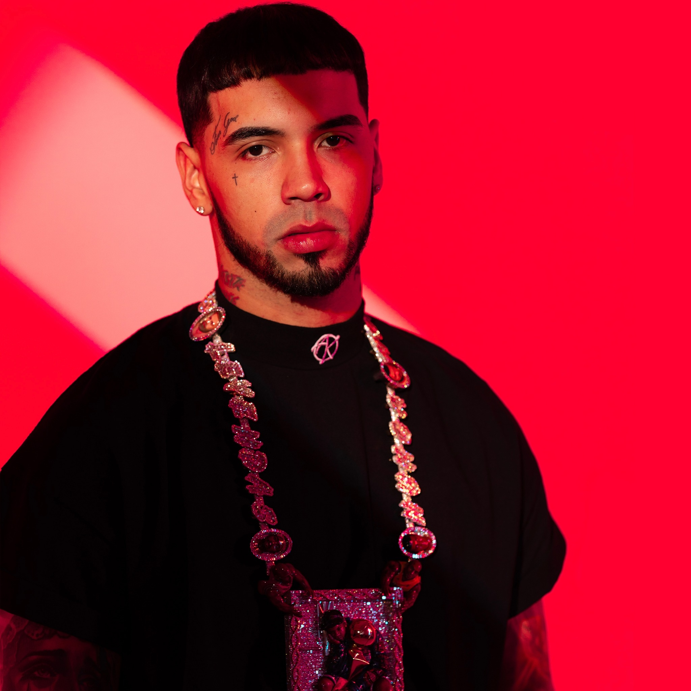
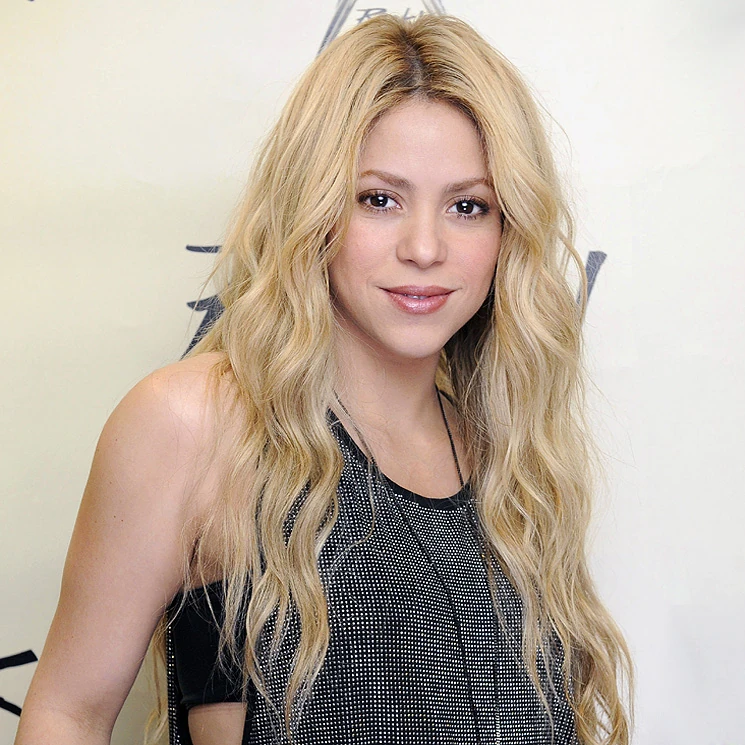

BAD BUNNY

Nacionalidad:Puertorriqueño
Nacimiento:10/03/1994
canciones mas reconocidas:
“Yo perreo sola”
“Safaera”
Los premios:El premios Billboard de la Música Latina 2022.
OZUNA
Nacionalidad:Puertorriqueño
Nacimiento:13/03/1992
canciones mas reconocidas:
“Dile Que Tú Me Quieres”
“Escápate conmigo”
Los premios: El premio Grammy Latino a la Mejor Canción Urbana
Anuel-AA

Nacionalidad:Estadounidense
Nacimiento:26/11/1992
canciones mas reconocidas:
“Ella quiere beber”
“Adicto”
Los premios: Premio Juventud a Ritmo en la regadera
SHAKIRA

Nacionalidad:Colombia
Nacimiento:02/02/1977
canciones mas reconocidas:
“Estoy aquí”
“Dónde estás corazón”
Los premios: Premio Juventud a Ritmo en la regadera